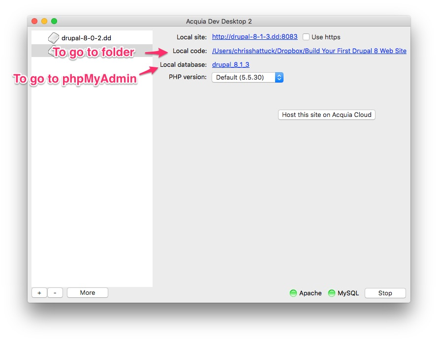

Drupal 8 Site Building
Beginning of chapter 9 file and database snapshot
These instructions can be found in your resource pack, in the Chapter Snapshots/8.1 folder under the name chapter-09-snapshot-slide.html.
- Back up your entire Drupal directory (suggestion: Zip the entire folder as the backup)
- Back up your database (go to phpMyAdmin, click the Export tab and click Go)
- Download the snapshot ZIP file from https://github.com/buildamodule/drupal8sitebuilding/archive/snapshot-8-1-9.zip and extract it.
- Replace your example site folder with the site folder.
- Open phpMyAdmin, click the Import tab, select the database.sql file and click Go.
- To log into Drupal, use the username admin and the password admin.
